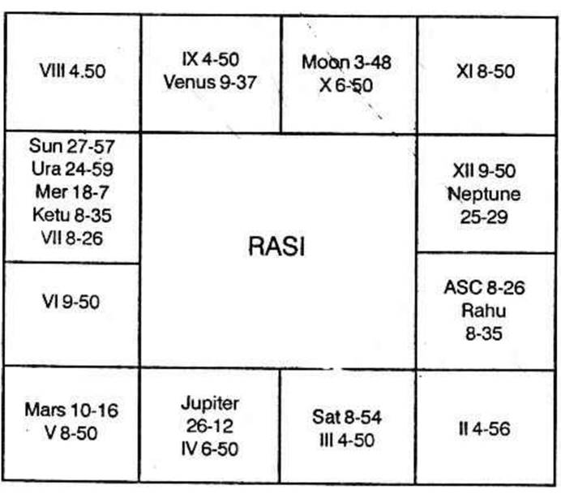

Spiritual life brings about an attachment to the unknown and unseen but about which we have read or heard much. Also it brings about slowly and steadily or surprisingly and suddenly separation from the family or detachment towards the material worldly pleasures.
Mostly, all of us get initiated by a person—a Guruji—who has been experienced in those lines, who had the dynamic urge within him to seek the Truth by penance and deep meditation, regularly, systematically, continuously for a pretty long period. Only a few solitary individuals have the urge from the birth and even without a Guruji, they attain a high status in the spiritual life. They will be a very few in many, many millions of the people, who will have Mukti or progressive emancipation. Of them, a few will merge themselves with Nirguna Braman.
For such an attainment, one has to cultivate serenity, sincerity and simplicity. No university degree, nor any diploma can give this. But these are to be either inborn or obtained by cultivating these virtues. Also you should avoid audacity, irritability, cruelty and impurity.
One should keep the body fit, hale and healthy by regular habits and practice. One can enjoy fullness, peace and bliss only through meditation by trying to attain God-realisation developing a detached attachment feeling towards wife, etc. It does not mean that one should ignore her or forget her or get separated from her. The noblest way of enjoying bliss by developing spiritual side is (as is said in Tamil 'Illaramay Nallaram') to give due respect and regard to one's wife considering her as Goddess Lakshmi, as the embodiment of patience, sacrifice, service and love, as one who contributes for the building up of the nation by moulding the children, as one who assists in our attempts. So one can lead a family life and at the same time go on progressing on the spiritual side.
There are a very few people who desert the family, run away and wait for the choultry bell for their daily meal – Wretched! What a Sanyasi he is!
Nowadays criminals after committing the crime try to hide themselves and hence lead a Sanyasin life without allowing any one to know his whereabouts. Saffron dress alone does not make one a Sanyasin. Development of the spiritual side by regular meditation and prayers is needed. If one becomes a Sanyasi, in true sense, he is not denied of absolute necessities. He will be respected and honoured. In that situation, if need be, without a pie in the bank on his name he can operate on the purses and cheques of the rich people, without a car, he can travel in latest modern car, without a house of his own, he can be in a palace, though he does not pray for it, but it comes automatically.
Hence lead a family life and at the same time reduce Ika-Lokha-Sukha and improve the Para-Lokha-Sadhana.
(Therefore one has to judge a horoscope for the above virtues and vices). Let us take an example.
Can this native achieve his aim in spiritual side? The horoscope is as follows:

Sun Dasa balance 2 years 9 months 11 days. Now he is running Jupiter Dasa Ketu Bhukti from 1-12-68.
(a) Will he be sincere?
Benefic in the 4th house, in the constellation of another benefic and sub of a benefic makes one true, reliable and sincere. In this chart Jupiter is in the 4th Bhava. It is in Mercury's star and Jupiter sub. So he cannot afford to entertain evil thoughts.
Westerners claim that Saturn helps concentration. According to their theory Saturn forms sextile aspect with the ascendant and it promises that he will be able to concentrate. But according to Krishnamurti, mind which is normally ever wavering is never at rest – Hence, one is to find out the sub lord of the position occupied by Moon. Moon is in 3°48′ in Taurus. Hence Moon is in the sub of Saturn. So any one having Moon in the sub of Saturn can concentrate. This native also will meditate and concentrate. It is possible.
One can be arrogant only when Mars is connected with the ascendant, or at least with the lord of the ascendant. As Mars has no connection at all, he will neither be arrogant, nor have the egoism. If Mars is in Saturn sub, one will be unassuming and simple. Here Mars is in sat sub. So, he will not have the vices which are to be avoided.
So, when one has no vice, but has the necessary virtues, then we have to judge whether one will have the opportunity to have a good Guruji to initiate; if so, when.
5th house denotes initiation. It is occupied by Mars. No planet is in Mars star. 5th house is owned by Jupiter. Sun alone is in Jupiter's star.
Therefore he will have initiation during Jupiter Dasa, Sun Bukti Mars Anthra i.e., in September 1972.
Whenever Saturn is in 3, there will be interruption. Yet it is the tenth house which shows one's Yoga, Karma, Yagna, etc. No planet is in the 10th house. Venus is the lord of the 10th cusp. It is in Ketu star Saturn sub. Therefore he will practise.
Progress depends on the 11th house. It is not occupied by any planet. Mercury is the lord of the 11th cusp. Jupiter alone in Mercury star. Therefore during Jupiter Dasa itself, he will have satisfactory progress. Saturn Dasa follows. Saturn is in Jupiter's sub. Hence it will continue – Progress during Saturn Dasa will be like an inclined plane ever increasing in height.
According to Westerners, Jupiter forming trine aspect with Neptune in the 12th house is very favourable for the awakening of spiritual faculties. The inspirational nature will be marked. This aspect is good for material success, worldly pleasures and vast advancement in spiritual life.